Our scrap logs got scattered across the shop-floor export folder. From a terminal, find every log file for weld cell 3 and count how many reject lines each one holds; put those counts in this sheet under the existing columns, then add a closing slide to this deck listing the file names with their counts.
THINKINGI need to understand the task fully before acting. The task involves:
1. Finding log files for weld cell 3 in a "shop-floor export folder"
2. Counting reject lines in each file (from terminal)
3. Putting counts in the sheet under existing columns (A="Log file", B="Reject lines")
4. Adding a closing slide to "this deck" listing file names with counts
But "this deck" is ambiguous - the current window is LibreOffice Calc, not Impress. I need to gather more info. Let me first take a screenshot to see current state, then explore the file system via terminal to find the folder and files. I also need to locate "this deck" - there may be an Impress file. Let me open a terminal first to investigate.
Let me start by opening the terminal application from the taskbar.
ACTIONI'll start by opening a terminal to explore the file system and locate the shop-floor export folder, the log files, and the presentation deck.
EXECUTED (pyautogui in VM)pyautogui.click(32, 667)
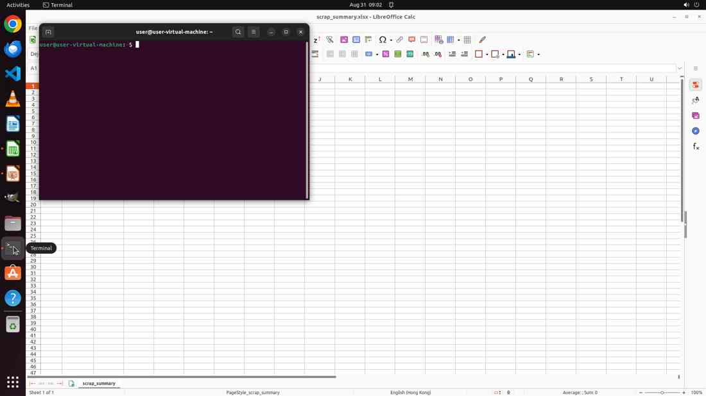
step 2 01:02:33
THINKINGTerminal is open. I need to locate the shop-floor export folder. Let me search the filesystem for likely folders/files. I'll run a few exploratory commands: find the export folder, look for weld cell 3 log files, and locate the presentation deck (.pptx). Let me batch a broad find command first.
ACTIONThe terminal is open. Let me explore the filesystem to locate the shop-floor export folder, the log files, and the presentation deck.
EXECUTED (pyautogui in VM)pyautogui.click(449, 299)
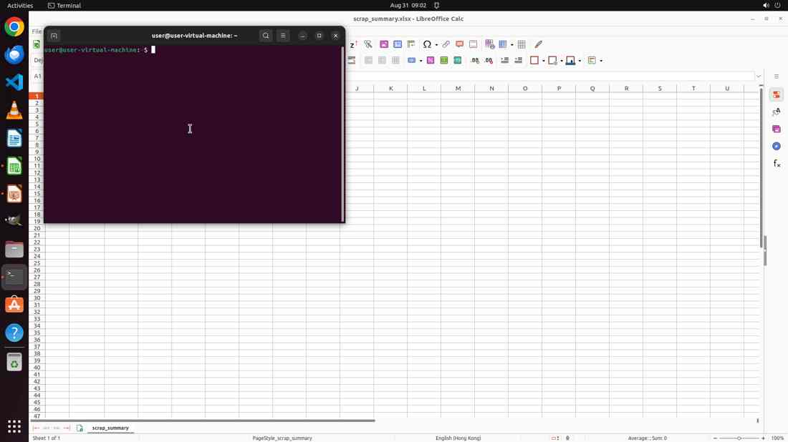
step 3 01:02:49
THINKINGI'll run a broad find to locate relevant folders and files. Let me search for anything with "export", "shop", "weld", "cell", "log", and pptx files. I'll batch a single find command that covers home directory broadly, but limit output. Let me first list the home directory and common locations.
ACTIONLet me search for the relevant folders and files across the system.
THINKINGThe command is still running / the output isn't shown yet. I need to press Enter — actually I included a newline at the end of the type, so it should have executed. Let me wait and take a screenshot to see the output. The terminal may still be processing the find over /home/user.
ACTIONLet me wait for the find commands to complete and view the output.
THINKINGThe command still shows at the prompt without executing - the trailing newline in my type may not have registered as Enter. Let me press Enter explicitly.
ACTIONThe command hasn't executed yet. Let me press Enter.
EXECUTED (pyautogui in VM)pyautogui.press("return")
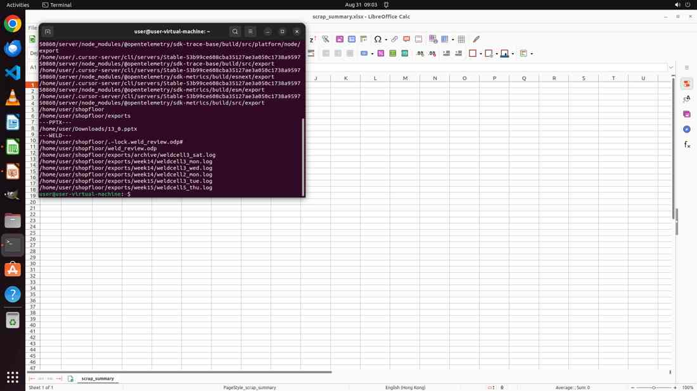
step 6 01:03:41
THINKINGNow I have the key information:
- Shop-floor export folder: /home/user/shopfloor/exports (and subfolders archive, week14, week15)
- PPTX deck: /home/user/Downloads/13_0.pptx
- Weld files:
- /home/user/shopfloor/.~lock.weld_review.odp# (lock file, ignore)
- /home/user/shopfloor/weld_review.odp (this is a deck, not a log)
- /home/user/shopfloor/exports/archive/weldcell3_sat.log
- /home/user/shopfloor/exports/week14/weldcell3_mon.log
- /home/user/shopfloor/exports/week14/weldcell3_wed.log
- /home/user/shopfloor/exports/week14/weldcell2_mon.log (cell 2, not 3 - exclude)
- /home/user/shopfloor/exports/week15/weldcell3_tue.log
- /home/user/shopfloor/exports/week15/weldcell5_thu.log (cell 5, exclude)
So the shop-floor export folder is /home/user/shopfloor/exports. I need "every log file for weld cell 3". That means files matching weldcell3*.log within the exports folder (scattered across subfolders). The three weldcell3 logs:
- archive/weldcell3_sat.log
- week14/weldcell3_mon.log
- week14/weldcell3_wed.log
- week15/weldcell3_tue.log
That's 4 files. Let me confirm by doing a precise find within exports for *weldcell3*.log.
Now I need to understand what a "reject line" is. I need to inspect the log file format. Let me cat one of them to understand the structure before counting. Let me first do the precise find and inspect a sample file.
Note there's ambiguity: "this deck" - the task says "add a closing slide to this deck". The open window is Calc. But there's a deck 13_0.pptx in Downloads and weld_review.odp in shopfloor. Which is "this deck"? The task context: "our scrap logs", "scrap_summary" sheet. The deck "this deck" most likely refers to the one that's open/associated. But only Calc is open, not Impress.
Hmm. The deck name 13_0.pptx - "13_0" is odd. weld_review.odp is a weld-themed deck, more likely related to this weld cell topic. But it's an .odp. The task says "deck" generically.
Let me think about which is "this deck". The task references "this deck" as if it's the currently relevant presentation. Since only Calc is open in the GUI, neither deck is open. The most contextually-relevant deck is weld_review.odp since it's about welding. But 13_0.pptx is in Downloads and matches a pptx search.
Actually the phrase "this deck" strongly implies a specific deck the user is referring to. Given the weld context and that weld_review.odp sits in the same shopfloor folder as the logs, weld_review.odp is the natural "deck". But it's odd that a pptx exists too.
Let me look at both decks to decide. First, let me inspect the logs and both decks. Let me examine the log content format and the decks' contents. I'll be methodical.
Let me first inspect a log file to understand reject lines, and list both decks' slide info. I'll cat one log.
ACTIONI've located the key items:
- **Export folder:** `/home/user/shopfloor/exports` (with subfolders `archive`, `week14`, `week15`)
- **Weld cell 3 logs:** `archive/weldcell3_sat.log`, `week14/weldcell3_mon.log`, `week14/weldcell3_wed.log`, `week15/weldcell3_tue.log`
- **Decks:** `/home/user/Downloads/13_0.pptx` and `/home/user/shopfloor/weld_review.odp`
Let me inspect a log file to understand what a "reject line" looks like before counting.
THINKINGThe command is queued but the output is still showing the previous output. It seems the newline at end didn't execute it yet either — the prompt shows the command but no new output below. Let me press Enter to execute.
EXECUTED (pyautogui in VM)pyautogui.press("return")
step 8 01:04:05
THINKINGNow I understand the log format:
```
timestamp,part,cell,status,reason
2024-04-11 08:25,FLG-4419,WELD-CELL-3,REJECT,porosity
2024-04-03 14:06,HS6-8801,WELD-CELL-3,REJECT,misalign
...
```
CSV with header. Status column (4th field) is REJECT or PASS. A "reject line" is a data line with status REJECT. So count = number of lines containing ",REJECT,". The header has no REJECT. I should count lines matching REJECT status precisely (field 4 = REJECT). Using grep -c on "REJECT" could match if reason contains "reject" but reason values are things like porosity, misalign - unlikely. To be safe, count field 4 exactly. I'll use awk to count where $4=="REJECT" (with FS=","). That's the robust definition.
Now let me compute counts for each of the 4 cell3 log files. Let me write a loop with awk counting field 4 == "REJECT".
I'll batch a command that outputs filename + count for each of the 4 files.
ACTIONThe log format is CSV: `timestamp,part,cell,status,reason`, with status `REJECT` or `PASS`. A reject line is a data line where the status field (4th) is `REJECT`. Let me count reject lines in each of the four weld cell 3 logs using `awk`.
TOOL CALL<tool_call>
<function=computer_use>
<parameter=action>
type
</parameter>
<parameter=text>
for f in $(find /home/user/shopfloor/exports -iname "*weldcell3*.log" | sort); do c=$(awk -F, 'NR>1 && $4=="REJECT"{n++} END{print n+0}' "$f"); echo "$(basename $f) $c"; done
</parameter>
</function>
</tool_call>
EXECUTED (pyautogui in VM)pyautogui.typewrite("for f in $(find /home/user/shopfloor/exports -iname \"*weldcell3*.log\" | sort); do c=$(awk -F, 'NR>1 && $4==\"REJECT\"{n++} END{print n+0}' \"$f\"); echo \"$(basename $f) $c\"; done")
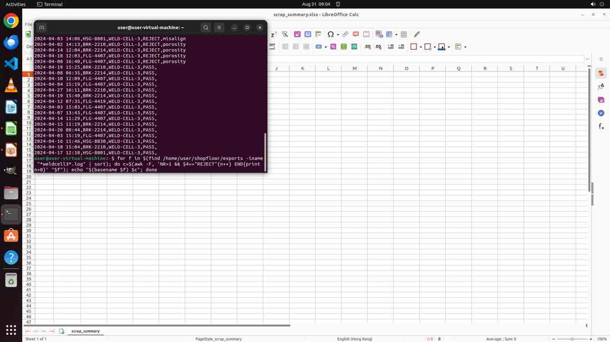
step 9 01:04:12
THINKINGThe command is typed but not yet executed (still shows at prompt). The trailing newline didn't trigger it. Let me press Enter.
EXECUTED (pyautogui in VM)pyautogui.press("return")
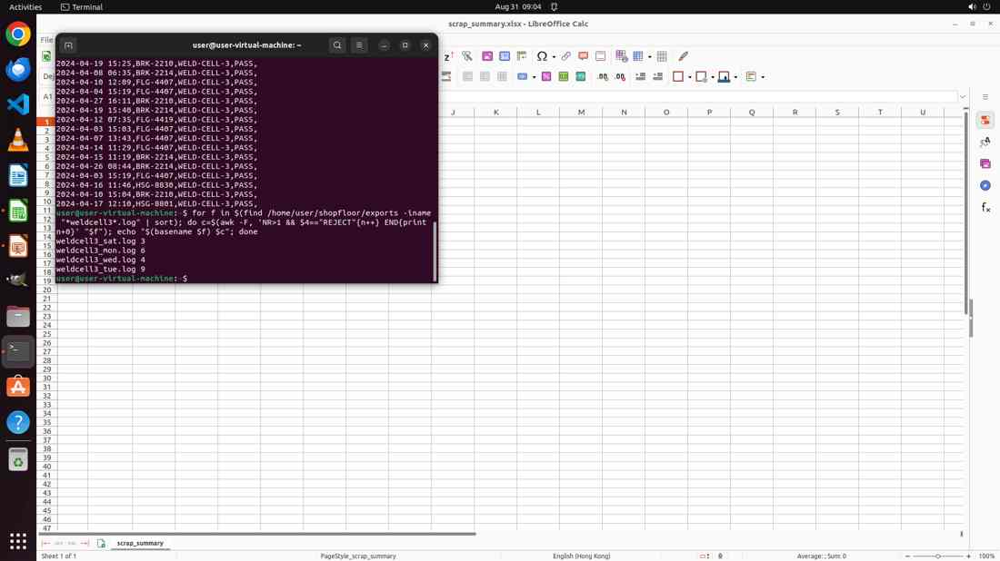
step 10 01:04:41
THINKINGThe counts are computed:
- weldcell3_sat.log 3
- weldcell3_mon.log 6
- weldcell3_wed.log 4
- weldcell3_tue.log 9
These are sorted by full path (archive, week14/mon, week14/wed, week15/tue). Let me verify the count for the mon file I saw: it had 5 REJECT lines visible (rows: FLG-4419 porosity, HS6-8801 misalign, BRK-2214 porosity, FLG-4407 porosity, FLG-4407 porosity) = 5, but the count says 6. The earlier cat output scrolled — the top line was "timestamp..." header and I saw 5 REJECT rows but there may have been a 6th above that scrolled off (the very first data row). The cat started at row 83 which showed the last data row; earlier lines scrolled. Actually the count of 6 is authoritative from awk. Let me trust awk.
Actually let me double check: the sample cat showed these REJECT rows:
08:25 FLG-4419 porosity
14:06 HS6-8801 misalign
14:13 BRK-2214 porosity
12:04 BRK-2214 porosity
12:03 FLG-4407 porosity
16:40 FLG-4407 porosity
That's 6 REJECT rows! I miscounted. So 6 is correct.
So final data:
weldcell3_sat.log = 3
weldcell3_mon.log = 6
weldcell3_wed.log = 4
weldcell3_tue.log = 9
Now I need to fill the sheet. Columns: A = "Log file", B = "Reject lines". I'll put the file names in column A (rows 2-5) and counts in column B.
Regarding file names: The task says "listing the file names". I'll use the base file names (weldcell3_sat.log etc.). That's the clearest "file name".
Now "this deck". I need to decide which presentation. There are two decks:
1. /home/user/Downloads/13_0.pptx
2. /home/user/shopfloor/weld_review.odp
The task says "add a closing slide to this deck listing the file names with their counts." The phrase "this deck" implies a specific, presumably contextually-relevant deck. The most relevant to the weld/scrap topic is weld_review.odp (in the shopfloor folder with the logs). The 13_0.pptx name is generic.
I should inspect both to determine which is the intended "deck". Let me examine their titles/content. Let me open them or inspect via command line. For .odp/.pptx I can use unzip to read XML, but easier to check with LibreOffice. Actually, to be efficient and avoid confusion, let me inspect the slide titles of both decks from the terminal using python or unzip grep. Let me check if there's a way. I'll grep the slide text.
Let me inspect both decks' content to identify which one is about weld/scrap. I'll extract text.
ACTIONCounts are confirmed:
- `weldcell3_sat.log` = 3
- `weldcell3_mon.log` = 6
- `weldcell3_wed.log` = 4
- `weldcell3_tue.log` = 9
Now I need to identify which presentation is "this deck". Let me inspect the content of both candidate decks to see which is the relevant one.
TOOL CALL<tool_call>
<function=computer_use>
<parameter=action>
type
</parameter>
<parameter=text>
echo "=== PPTX 13_0 ==="; unzip -o -q /home/user/Downloads/13_0.pptx -d /tmp/p_130; ls /tmp/p_130/ppt/slides; echo "---- text ----"; for s in /tmp/p_130/ppt/slides/slide*.xml; do echo "## $s"; grep -o '<a:t>[^<]*</a:t>' "$s" | sed 's/<[^>]*>//g'; done
</parameter>
</function>
</tool_call>
EXECUTED (pyautogui in VM)pyautogui.typewrite("echo \"=== PPTX 13_0 ===\"; unzip -o -q /home/user/Downloads/13_0.pptx -d /tmp/p_130; ls /tmp/p_130/ppt/slides; echo \"---- text ----\"; for s in /tmp/p_130/ppt/slides/slide*.xml; do echo \"## $s\"; grep -o '<a:t>[^<]*</a:t>' \"$s\" | sed 's/<[^>]*>//g'; done")
EXECUTED (pyautogui in VM)pyautogui.press("return")
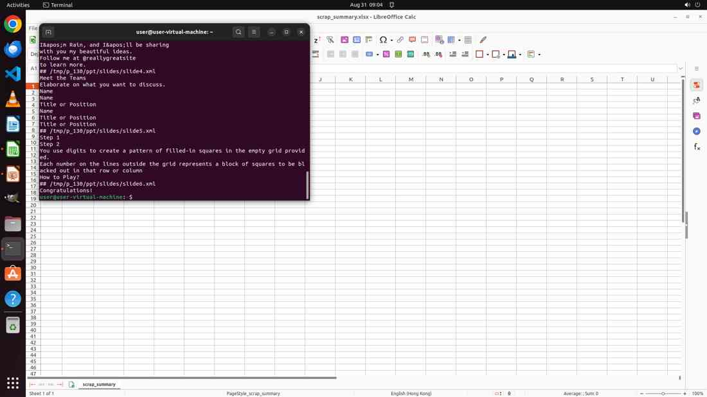
step 12 01:05:02
THINKINGThe 13_0.pptx is a generic template deck: slides about "Meet the Teams", "Title or Position", "Step 1/Step 2" about a puzzle game, "How to Play?", "Congratulations!". This is NOT related to weld/scrap. So 13_0.pptx is a distractor.
The other deck, /home/user/shopfloor/weld_review.odp, is the weld review deck — contextually the right "deck". Let me verify its content too to be confident. Let me extract text from the odp (it's a zip too, content.xml).
ACTIONThe `13_0.pptx` is an unrelated generic template (about "Meet the Teams", "How to Play?", a puzzle game) — a distractor. The relevant deck is `weld_review.odp`. Let me confirm its content.
THINKINGThe command needs Enter to execute (the second grep/python part hasn't run yet - the prompt shows it typed but not executed). Let me press Enter.
EXECUTED (pyautogui in VM)pyautogui.press("return")
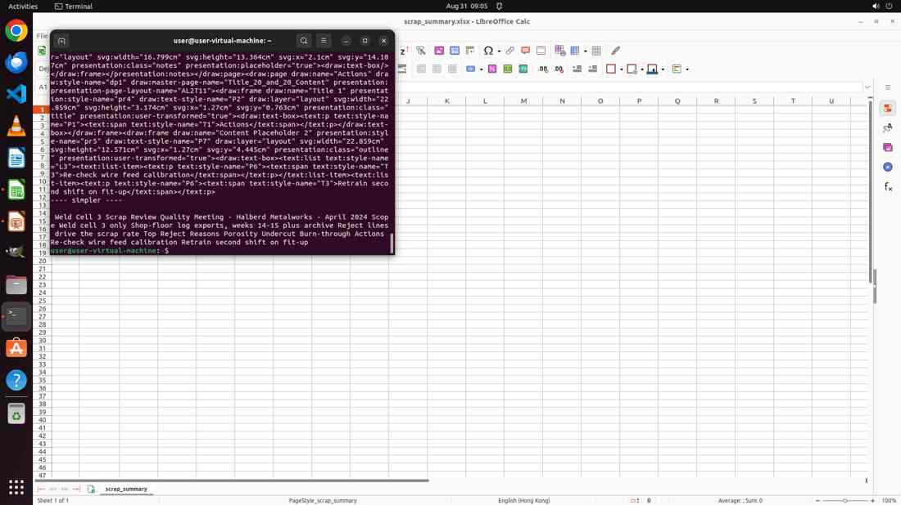
step 14 01:05:29
THINKINGConfirmed. The weld_review.odp deck content:
"Weld Cell 3 Scrap Review Quality Meeting - Halberd Metalworks - April 2024 Scope Weld Cell 3 only Shop-floor log exports, weeks 14-15 plus archive Reject lines drive the scrap rate Top Reject Reasons Porosity Undercut Burn-through Actions Re-check wire feed calibration Retrain second shift on fit-up"
This is clearly the intended "deck" — it's literally the Weld Cell 3 scrap review, referencing shop-floor log exports weeks 14-15 plus archive, and reject lines. This matches the task perfectly.
So my plan:
1. Fill the scrap_summary sheet: Column A (rows 2-5) file names, Column B counts.
- A2: weldcell3_sat.log, B2: 3
- A3: weldcell3_mon.log, B3: 6
- A4: weldcell3_wed.log, B4: 4
- A5: weldcell3_tue.log, B5: 9
Then save as xlsx (Ctrl+S, keep format).
2. Open weld_review.odp in Impress, add a closing slide listing the file names with their counts, save.
Order: Let me do the spreadsheet first since it's already open. Then Impress.
Now, "put those counts in this sheet under the existing columns" — the columns already exist (Log file, Reject lines). So I put file names under "Log file" and counts under "Reject lines". Good.
Let me switch to Calc. Click on the Calc window. The Calc window is behind the terminal. Let me click on the visible Calc area (right side) or use the taskbar. Actually there's no taskbar entry visible; the Calc window is behind. Let me click on the spreadsheet area on the right (e.g., cell area) to bring it forward, then use the Name Box to navigate to A2.
Let me click on the Calc title bar area / the visible spreadsheet. I'll click on the visible grid on the right side.
ACTIONConfirmed — `weld_review.odp` is the intended deck: its title is "Weld Cell 3 Scrap Review ... Shop-floor log exports, weeks 14-15 plus archive ... Reject lines drive the scrap rate." This matches the task exactly.
Now I'll fill in the spreadsheet first. Let me switch to Calc by clicking its window.
EXECUTED (pyautogui in VM)pyautogui.click(1049, 600)
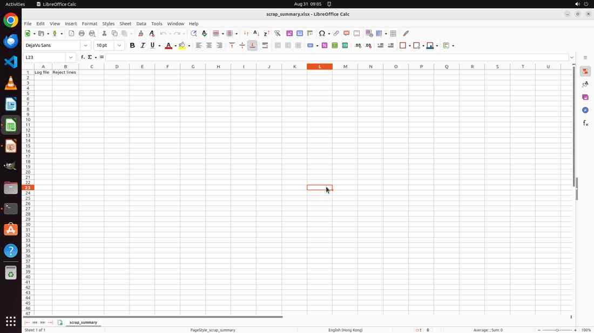
step 15 01:05:45
THINKINGCalc is now in focus. I'll click the Name Box, type A2, Enter, then type the data row by row. I can type each value and press Tab to move right (A to B), then Enter to go to next row. Actually after Tab then Enter, Calc returns to column A of next row (the column where I started). Let me be safe and navigate explicitly.
Better approach: Click Name Box, go to A2. Then type filename, Tab, count, Enter. Calc's behavior: if I Tab from A2 to B2 then press Enter, the cursor returns to A3 (start column of the entry sequence). This is reliable. Let me use that.
Sequence:
- Name box: A2 Enter
- type "weldcell3_sat.log" Tab "3" Enter
- type "weldcell3_mon.log" Tab "6" Enter
- type "weldcell3_wed.log" Tab "4" Enter
- type "weldcell3_tue.log" Tab "9" Enter
- then Ctrl+S, keep xlsx.
Let me batch all of this.
ACTIONCalc is focused. I'll navigate to A2 and enter the file names and counts in sequence.
EXECUTED (pyautogui in VM)pyautogui.click(144, 183)
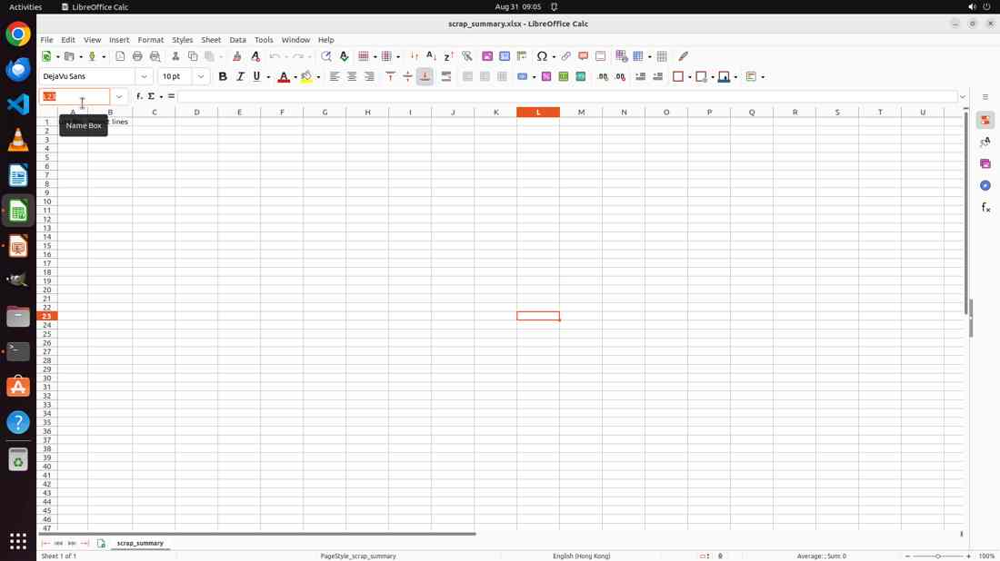
step 16 01:05:53
THINKINGThe Name Box is selected (shows L23 highlighted). I'll type A2, Enter, then enter data using Tab/Enter pattern. Let me batch everything including the data entry.
ACTIONThe Name Box is active. I'll navigate to A2 and enter all four rows of data, then save.
EXECUTED (pyautogui in VM)pyautogui.typewrite("A2")
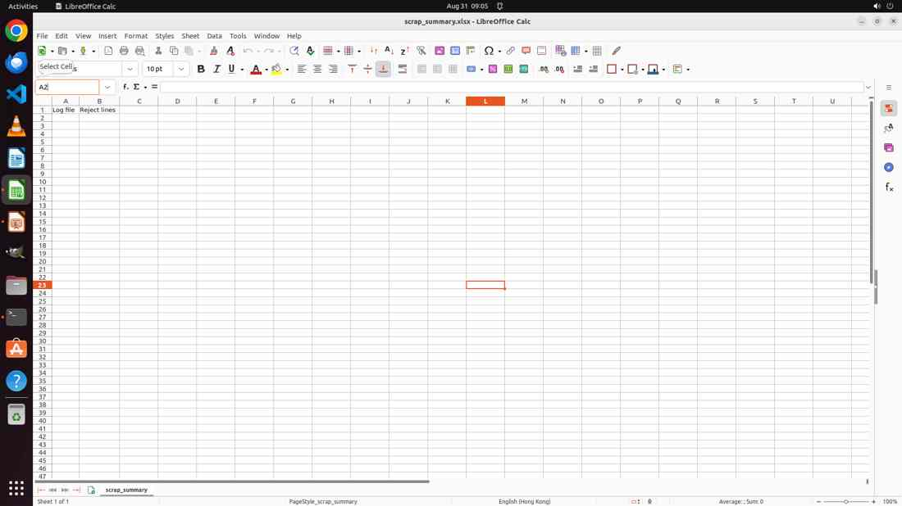
step 17 01:06:05
THINKINGThe Name Box shows "A2" but the cursor in the grid still appears on L23. The Enter may not have registered the navigation yet, or the screenshot was taken mid-action. The name box still shows "A2" and the dropdown "Select Cell" appeared. It seems the navigation to A2 may not have committed. Let me just click directly on cell A2 to be safe, then type the data. A2 is at approximately x=94, y=171.
Actually the safer path: click directly on cell A2 in the grid.
ACTIONLet me click directly on cell A2 in the grid to be certain, then enter all data.
EXECUTED (pyautogui in VM)pyautogui.click(140, 254)
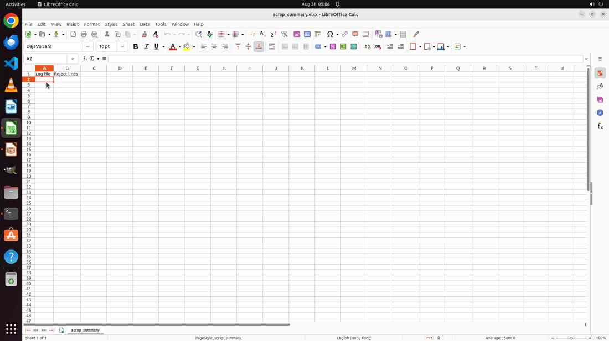
step 18 01:06:13
THINKINGNow A2 is selected (Name Box shows A2, cell A2 highlighted). I'll type the data. Using Tab to move A→B and Enter to return to next row's A. Let me type all rows in one batch.
ACTIONA2 is selected. Now I'll enter all four rows of data (file name + count) using Tab and Enter.
EXECUTED (pyautogui in VM)pyautogui.typewrite("weldcell3_sat.log\t3\nweldcell3_mon.log\t6\nweldcell3_wed.log\t4\nweldcell3_tue.log\t9")
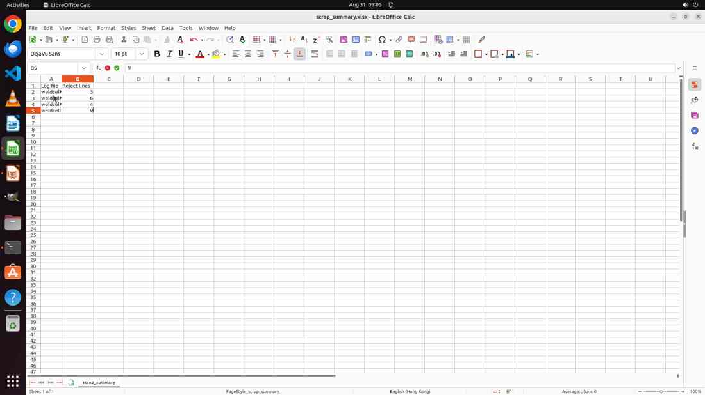
step 19 01:06:30
THINKINGThe data is entered. Column A shows "weldcell..." (truncated) for rows 2-5, and column B shows 3, 6, 4, 9. The B5 cell currently shows "9" being edited? Actually the Name Box shows B5 and the formula bar shows 9 with the enter/cancel icons — it seems the last value 9 in B5 is being committed. Let me press Enter to finalize, then verify. Actually the type ended with a newline which should have committed. But the screenshot shows B5 still in edit mode (green check/red X visible in formula bar area). Let me press Enter/Escape to be safe — press Enter to commit.
Wait, looking carefully: Name box = B5, formula bar shows "9" and there are red X / green check icons meaning it's in edit mode. That's odd after a newline. Let me press Enter to commit the last cell.
ACTIONThe data is entered in A2:B5. Let me press Enter to commit the final cell, then verify by clicking A2.
EXECUTED (pyautogui in VM)pyautogui.press("return")
step 20 01:06:40
THINKINGData committed. Rows 2-5 have file names (truncated display "weldcell...") and counts 3,6,4,9 in column B. Now save with Ctrl+S. A dialog will appear asking to keep xlsx format — click "Use Excel 2007-365!" / Keep Current Format.
ACTIONThe data is committed. Now I'll save the spreadsheet with Ctrl+S and keep the xlsx format.
EXECUTED (pyautogui in VM)pyautogui.hotkey("ctrl", "s")
step 21 01:06:54
THINKINGNo format dialog appeared yet in this screenshot — it might appear with a slight delay. Let me take a screenshot to check for the "Keep format" dialog.
THINKINGNo dialog appeared — the file may have saved directly (perhaps the "keep format" prompt is disabled, or it saved without prompting). The title still shows "scrap_summary.xlsx". It appears saved. Good. The spreadsheet portion is complete.
Now I need to open the deck weld_review.odp in Impress and add a closing slide. I'll open it via terminal with a subshell (per instructions, GUI apps need env var). Let me switch to the terminal. The terminal window was closed/behind? Earlier I clicked into Calc which brought it forward; the terminal is behind. Let me open the odp file.
Actually, easiest: use the Files app or double-click. But simplest reliable: open via terminal command. Let me bring up the terminal. I'll click the terminal icon in the dock (the dark icon at ~22,447).
Wait — that terminal I opened earlier might still be running. Let me click the terminal dock icon.
ACTIONThe spreadsheet saved without a format prompt (it saved as xlsx directly). The sheet is complete. Now I'll open the deck `weld_review.odp` in Impress. Let me switch to the terminal.
EXECUTED (pyautogui in VM)pyautogui.click(32, 669)
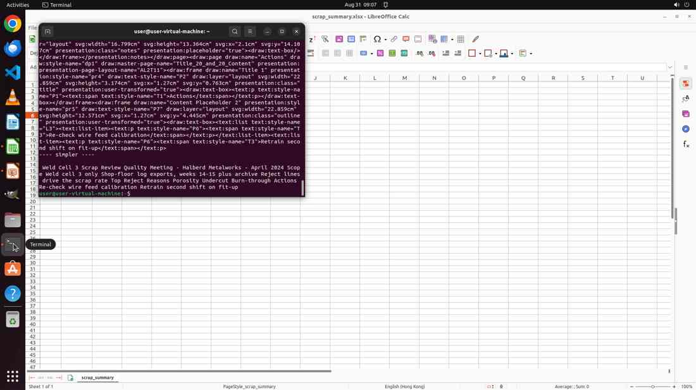
step 23 01:07:17
THINKINGThe terminal is now in focus with the earlier output confirming the deck content. I'll open the odp in Impress using a subshell with the DISPLAY env var. I'll click on the terminal prompt area first, then type the command.
ACTIONThe terminal is focused and I can confirm the deck content. Now I'll open `weld_review.odp` in Impress.
EXECUTED (pyautogui in VM)pyautogui.typewrite("(DISPLAY=:1 soffice --impress /home/user/shopfloor/weld_review.odp &)")
step 25 01:07:36
THINKINGThe command is typed. I need to press Enter to run it. Then wait for Impress to load (it may take several seconds). Note: Calc is already open in soffice, so opening another document should just open a new window in the same instance, which is fine.
EXECUTED (pyautogui in VM)pyautogui.press("return")
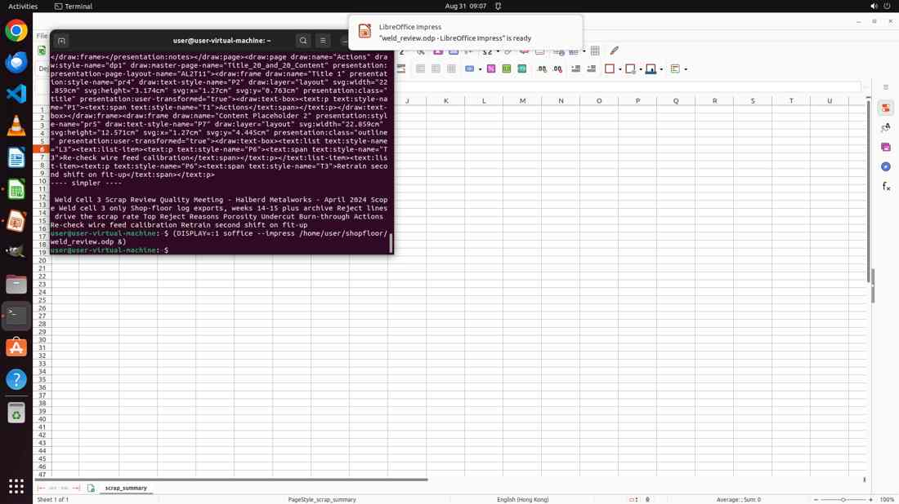
step 26 01:07:50
THINKINGA notification confirms "weld_review.odp - LibreOffice Impress" is ready. Let me switch to the Impress window. I'll click on the notification or the Impress in the taskbar. There's no visible taskbar; let me click the notification to bring it forward, or use the LibreOffice Impress icon in the dock (the orange/red icon at ~22,315 is Impress). Let me click the notification banner which usually focuses the window.
ACTIONImpress has opened the deck. Let me bring it to the front by clicking the notification.
EXECUTED (pyautogui in VM)pyautogui.click(968, 64)
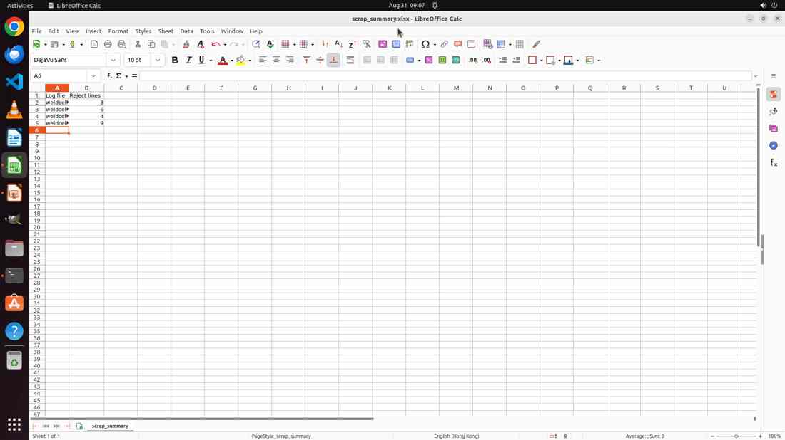
step 27 01:08:02
THINKINGClicking the notification just dismissed it and brought Calc to front. I need to switch to the Impress window. I'll use the Window menu in Calc? No — better to use the LibreOffice Impress icon in the dock, or use Alt+Tab. Let me use the Window menu which lists open LibreOffice windows. Actually the Window menu in a soffice instance lists all documents. Let me click Window menu.
ACTIONI need to switch to the Impress window. Let me use the Window menu which lists open LibreOffice documents.
EXECUTED (pyautogui in VM)pyautogui.click(686, 150)
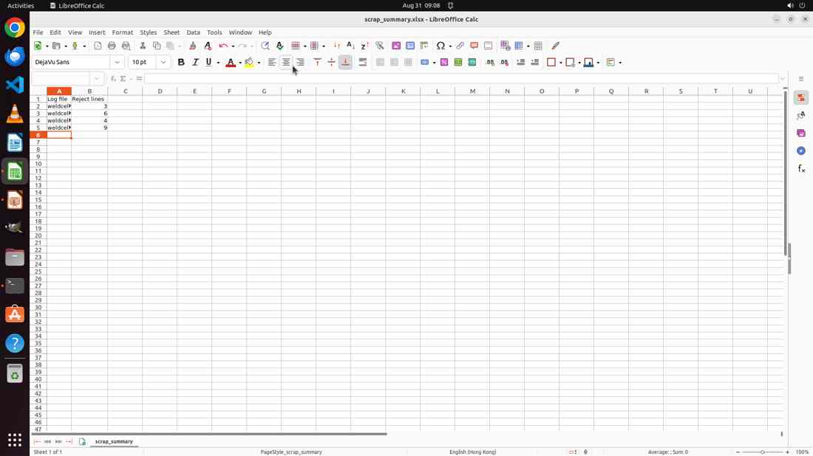
step 29 01:08:29
THINKINGStill showing Calc — the Impress window might be behind. The title still says Calc. The click may have just closed the menu. The Impress window may not have come to front, or it opened maximized behind Calc. Let me try clicking the Impress dock icon (the orange icon at 22,315) which should raise the Impress window. Actually that orange icon at 22,315 is Impress in the dock. Let me click it.
ACTIONStill on Calc. Let me click the Impress icon in the dock to raise its window.
EXECUTED (pyautogui in VM)pyautogui.click(32, 470)
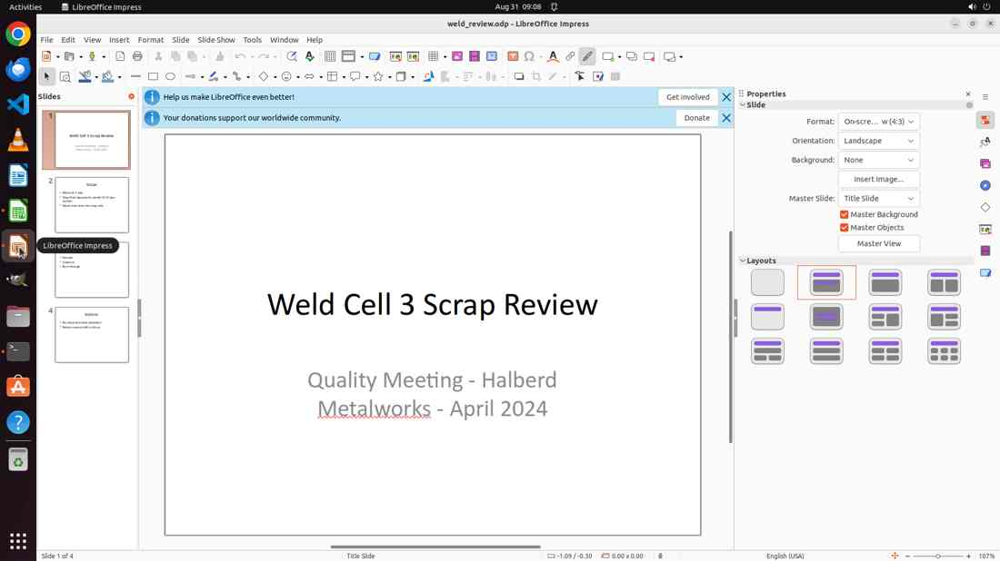
step 30 01:08:38
THINKINGImpress is now in front showing weld_review.odp with 4 slides. I need to add a closing slide (slide 5) listing the file names with their counts.
First close the two notification banners (Get involved / Donate). Then add a new slide.
Approach: Select the last slide (slide 4) in the panel, then use Slide menu > New Slide, or right-click slide 4 > New Slide. A new slide will be added after slide 4. I'll choose a layout with title + content so I can put a title and a content list.
The task: "add a closing slide to this deck listing the file names with their counts." So the new slide should list:
weldcell3_sat.log — 3
weldcell3_mon.log — 6
weldcell3_wed.log — 4
weldcell3_tue.log — 9
I'll give it a title like "Reject Lines by Log File" and the content listing each file with its count.
Let me close the banners first. Click the X on both.
ACTIONImpress is now showing `weld_review.odp` with 4 slides. Let me close the two notification banners first.
EXECUTED (pyautogui in VM)pyautogui.click(1391, 184)
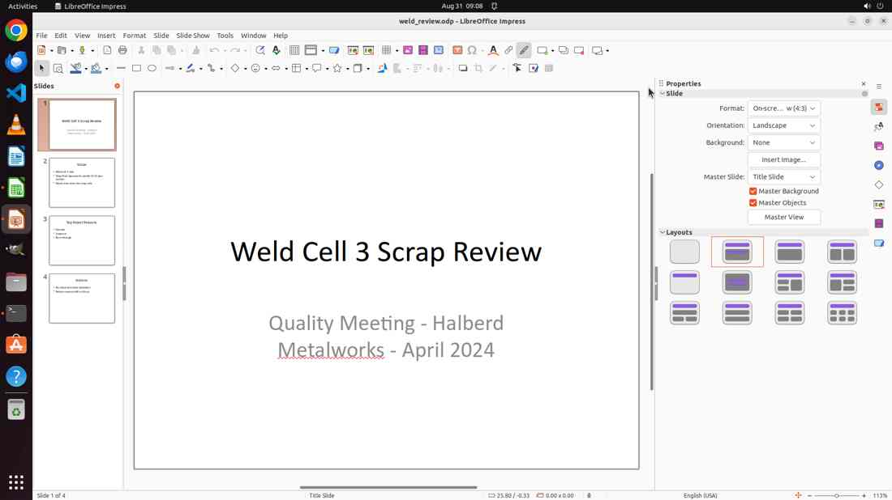
step 32 01:09:04
THINKINGBoth banners closed. Now I'll add a new slide after the last slide (slide 4). I'll right-click on slide 4 in the panel and choose "New Slide". Let me first select slide 4, then right-click. Actually right-clicking slide 4 directly gives a context menu with "New Slide". Let me right-click on slide 4.
ACTIONBoth banners are closed. Now I'll add a new slide after slide 4 by right-clicking on slide 4 in the panel.
EXECUTED (pyautogui in VM)pyautogui.rightClick(174, 640)
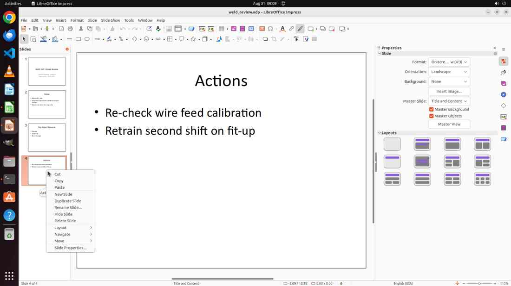
step 33 01:09:16
THINKINGSlide 4 is selected (Actions slide, "Title and Content" layout) and the context menu shows "New Slide". I'll click "New Slide" to add slide 5 after it.
ACTIONSlide 4 (Actions) is selected. I'll click "New Slide" to add slide 5 after it.
EXECUTED (pyautogui in VM)pyautogui.click(238, 731)
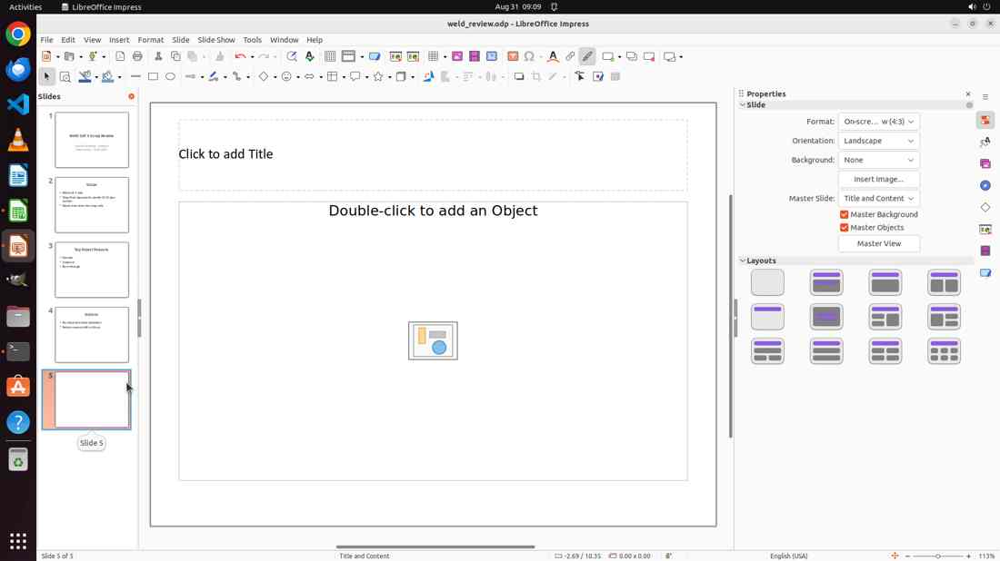
step 34 01:09:31
THINKINGSlide 5 is created with a "Title and Content"-style layout, but the content area shows "Double-click to add an Object" (a media object placeholder), not a text content placeholder. This layout has a title and an object placeholder, not a text list. That's inconvenient for a bulleted text list.
Better approach: use the Outline view, or pick a layout that has a text content placeholder. Alternatively, I can just add a text box. But the cleanest is to change the layout to "Title, Content" (the one with a bullet list). Looking at the Layouts panel, the second layout (top row, 2nd) currently highlighted is "Title, Content" but the actual placeholder is an object placeholder.
Actually simpler and robust: I'll put the title in the title placeholder, and add a text box for the list of files. But the object placeholder "Double-click to add an Object" is a media placeholder.
Let me instead change the layout to one that gives a text content box. In the Layouts panel, the layout at row1 col2 (currently selected, highlighted) appears to be "Title, Content" but it rendered as object placeholder. Let me try a different layout — e.g., the one at row 2 col 1 (top bar + content) which is "Title, Content" text. Hard to tell.
Simplest reliable route: Use the Outline view to type the title and bullet text. But outline view only shows the title+content text placeholders; the object placeholder won't appear there. Actually let me just:
1. Click title placeholder, type title.
2. Insert a text box with the list.
Actually, even simpler: The content area placeholder might actually accept text if I click into it. But "Double-click to add an Object" strongly indicates media placeholder.
Let me change layout to a clean "Title, Content" text layout. Let me hover the layouts. The layout at row1 col1 is blank (just title?). Let me pick the layout that clearly shows a title bar and a bulleted content region. Row 1 col 2 (highlighted) shows title bar + content lines - that IS title+content. But it rendered as object placeholder. Hmm, maybe this deck's master maps it to a media object.
Given uncertainty, the most robust approach: Add the title in the title box, then delete/ignore the object placeholder and insert my own text box with the list.
Let me first click the title placeholder and type the title.
ACTIONSlide 5 was added. The content placeholder is an "object" placeholder rather than a text list, so I'll add a title and then insert a text box for the file list. First, let me click the title placeholder and type the title.
EXECUTED (pyautogui in VM)pyautogui.click(830, 294)
step 35 01:09:41
THINKINGThe title placeholder is selected (single click selects the frame; status bar says "Title text 'Click to...' selected"). I need to double-click to enter edit mode, then type. Let me double-click on the title area and type the title text. I'll type "Reject Lines by Log File".
ACTIONThe title frame is selected. Let me double-click to enter edit mode and type the title.
EXECUTED (pyautogui in VM)pyautogui.doubleClick(830, 294)
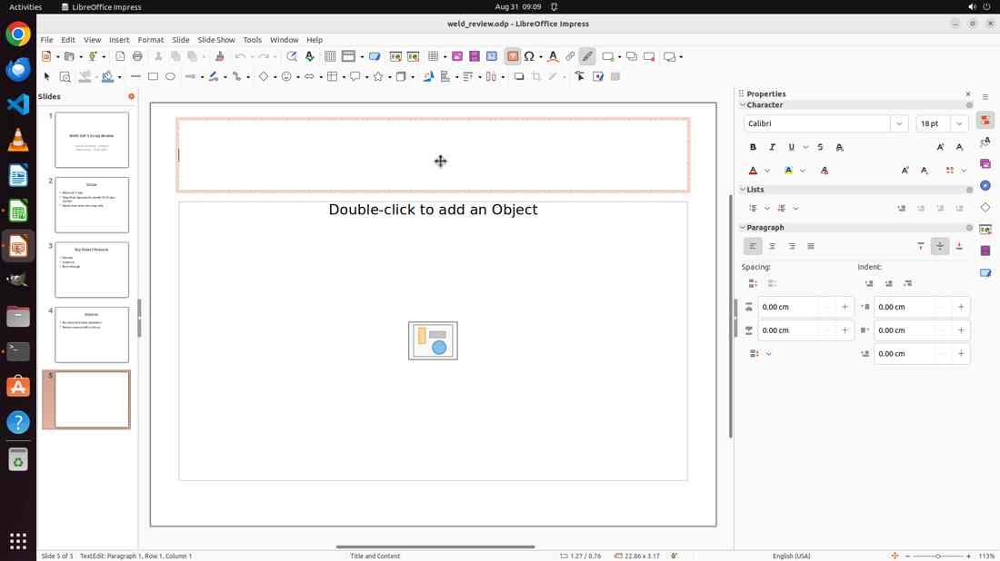
step 36 01:09:50
THINKINGThe title text box is now in edit mode (status bar: "TextEdit: Paragraph 1, Row 1, Column 1"). Let me type the title. I'll type "Reject Lines by Log File".
ACTIONThe title is in edit mode. I'll type the title text.
TOOL CALL<tool_call>
<function=computer_use>
<parameter=action>
type
</parameter>
<parameter=text>
Reject Lines by Log File
</parameter>
</function>
</tool_call>
EXECUTED (pyautogui in VM)pyautogui.typewrite("Reject Lines by Log File")
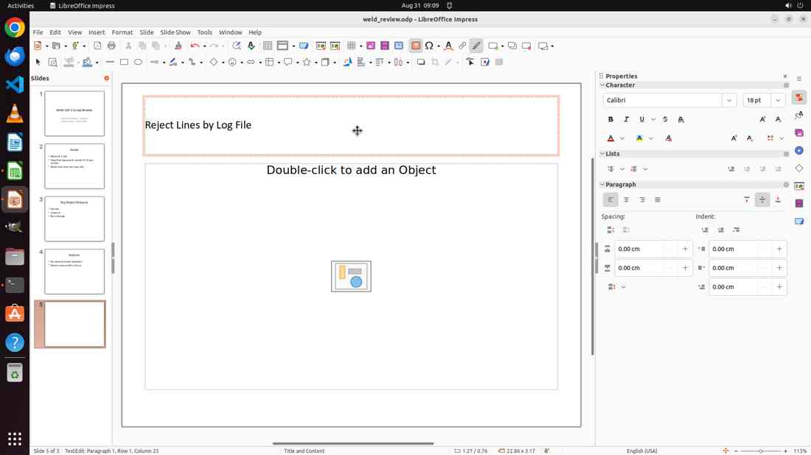
step 37 01:10:03
THINKINGTitle typed: "Reject Lines by Log File". Now I need to add the file list. The content placeholder is a media object placeholder ("Double-click to add an Object"). I'll instead insert a text box over the content area.
Let me click outside first to deselect the title (Escape), then insert a text box. I'll use Insert > Text Box, then draw a box in the content area, and type the list.
Actually, an easier approach: I could double-click the object placeholder — but that inserts a media object dialog. Not what I want.
Let me insert a text box. First press Escape to exit title edit. Then Insert menu > Text Box. Then drag to draw the text box in the content area (roughly from 250,300 to 850,600). Then type the four lines.
Let me press Escape first.
ACTIONTitle is set. Now I'll add a text box for the file list. First, Escape to exit the title, then use Insert > Text Box.
THINKINGNow the title frame is selected (not in text edit). I'll press Escape again to deselect entirely, then insert a text box. Let me press Escape once more, then open Insert menu > Text Box.
EXECUTED (pyautogui in VM)pyautogui.click(226, 75)
step 40 01:10:35
THINKINGThe Insert menu is open. "Text Box" is available. Let me click it, then draw the text box in the content area by dragging from about (280, 300) to (860, 610).
ACTIONI'll click "Text Box", then draw it in the content area.
EXECUTED (pyautogui in VM)pyautogui.click(257, 302)
step 41.1 01:10:46
THINKINGText box mode is active (cursor should be a crosshair). Now I'll drag to draw the text box in the content area. I'll drag from (280, 300) to (860, 610).
ACTIONText box tool is active. I'll draw the box in the content area.
EXECUTED (pyautogui in VM)pyautogui.moveTo(420, 449)
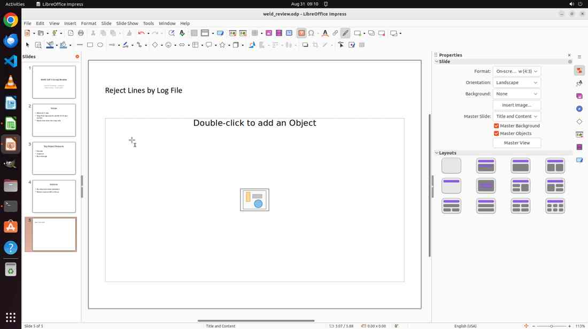
step 41.2 01:10:49
same model call as the previous action
EXECUTED (pyautogui in VM)pyautogui.dragTo(1289, 898, duration=0.5)
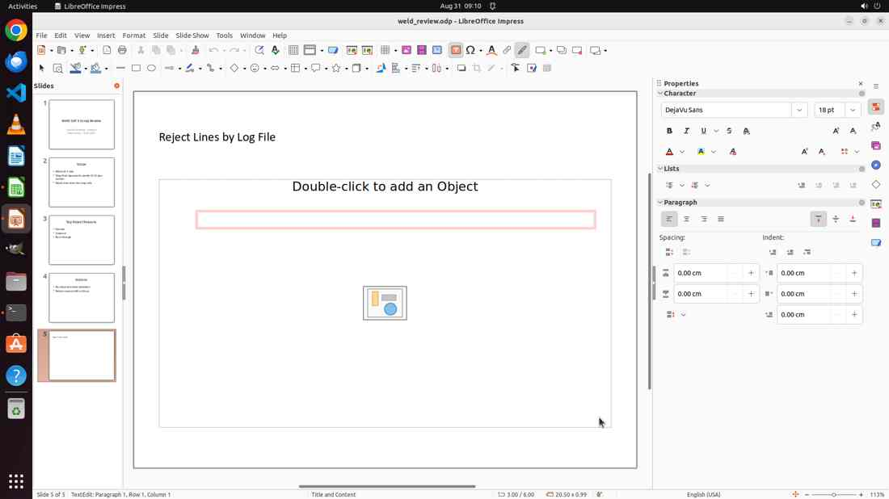
step 42 01:11:03
THINKINGHmm, the text box got drawn only as a thin horizontal strip at y~315 (20.50 x 0.99 cm), not the full area I intended. The drag only registered a thin box near the top. The status bar shows "20.50 x 0.99" — a wide but short box. That's fine actually; a text box auto-expands vertically as I type multiple lines. It's now in edit mode (TextEdit: Row 1, Column 1). I can type the four lines here. The box will grow as needed.
Let me type the list. I'll format as "filename — count". I'll use a hyphen/dash. Let me type:
weldcell3_sat.log — 3
weldcell3_mon.log — 6
weldcell3_wed.log — 4
weldcell3_tue.log — 9
I'll type with newlines between.
ACTIONThe text box is in edit mode (it auto-grows as I type). I'll type the file list with counts.
THINKINGThe list is entered:
weldcell3_sat.log — 3
weldcell3_mon.log — 6
weldcell3_wed.log — 4
weldcell3_tue.log — 9
The em-dash rendered (visible as "—" between filename and count). Good. The text box now contains 4 lines.
Now I need to click outside to deselect and then save. Let me click on an empty area of the slide (e.g., 555, 620), press Escape, then save with Ctrl+S (keep odp format).
Let me press Escape twice to deselect, then Ctrl+S.
ACTIONThe file list with counts is entered. Let me deselect and save the presentation.
THINKINGThe text box is now selected as an object (not in edit mode). The list is complete and looks good. Slide 5 thumbnail in the panel shows the content. Now save with Ctrl+S. Since it's .odp, it may save directly or prompt. Let me press Escape once more to fully deselect, then Ctrl+S.
ACTIONThe slide is complete. Let me save with Ctrl+S (keeping ODF format if prompted).
THINKINGFully deselected. The slide 5 now shows title "Reject Lines by Log File" and the list. Now save with Ctrl+S. A "Keep in ODF Format?" dialog may appear since it's odp — actually odp is the native format, so it saves directly without prompt. Let me press Ctrl+S.
EXECUTED (pyautogui in VM)pyautogui.hotkey("ctrl", "s")
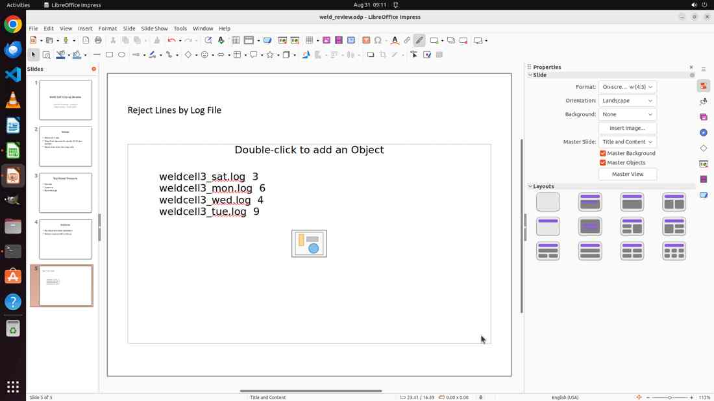
step 46 01:11:53
THINKINGNo dialog appeared — the .odp saved directly (native format, no prompt). The document is saved.
Let me verify the spreadsheet was actually saved too. Earlier when I pressed Ctrl+S in Calc, no dialog appeared and no visible confirmation. It's possible it saved. To be thorough, I should verify both files contain the expected data. I can verify via terminal by checking the saved odp's slide5 content and the xlsx. But the xlsx check requires reading the xlsx. Let me do a quick verification in the terminal.
Actually, let me verify both to be safe. Switch to terminal and:
1. Re-extract the odp and confirm slide 5 text contains the file list.
2. Check the xlsx — use python to read cell values, or unzip and grep the sheet xml.
Let me switch to terminal.
ACTIONThe presentation saved directly (native ODF, no prompt). Let me verify both files were written correctly via the terminal. I'll switch to the terminal.
EXECUTED (pyautogui in VM)pyautogui.click(32, 669)
step 47 01:12:05
THINKINGTerminal is focused. Let me verify both files. I'll:
1. Re-extract the odp and grep for the file names to confirm slide 5 saved.
2. Read the xlsx values.
For the xlsx, I'll use python with openpyxl if available, else unzip the sheet xml and read. Let me try python3 with openpyxl; if not installed, fallback to unzipping and grepping sharedStrings.
Let me batch a verification command.
ACTIONThe terminal is focused. Let me verify both saved files contain the expected data.
TOOL CALL<tool_call>
<function=computer_use>
<parameter=action>
type
</parameter>
<parameter=text>
rm -rf /tmp/odp_v && unzip -o -q /home/user/shopfloor/weld_review.odp -d /tmp/odp_v; python3 -c "import re;d=open('/tmp/odp_v/content.xml').read();print([w for w in ['weldcell3_sat.log','weldcell3_mon.log','weldcell3_wed.log','weldcell3_tue.log','Reject Lines by Log File'] if w in d])"
</parameter>
</function>
</tool_call>
EXECUTED (pyautogui in VM)pyautogui.typewrite("rm -rf /tmp/odp_v && unzip -o -q /home/user/shopfloor/weld_review.odp -d /tmp/odp_v; python3 -c \"import re;d=open('/tmp/odp_v/content.xml').read();print([w for w in ['weldcell3_sat.log','weldcell3_mon.log','weldcell3_wed.log','weldcell3_tue.log','Reject Lines by Log File'] if w in d])\"")
step 48 01:12:18
THINKINGThe command is typed but not yet executed (no output below the command). The trailing newline may not have executed it. Let me press Enter to run.
EXECUTED (pyautogui in VM)pyautogui.press("return")
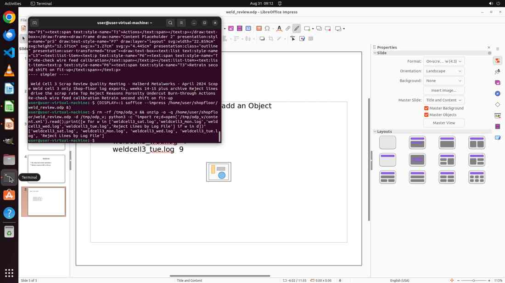
step 49 01:12:34
THINKINGThe output shows:
['weldcell3_sat.log', 'weldcell3_mon.log', 'weldcell3_wed.log', 'weldcell3_tue.log', 'Reject Lines by Log File']
All five strings are present in the saved odp. The presentation saved correctly with the new slide containing all file names and the title.
Now verify the xlsx. Let me read the cell values. I'll use python with zipfile to read sharedStrings and sheet1, or use openpyxl if available. Let me try a robust approach with python reading the sheet xml. Simpler: use ssconvert? Not available. Let me try openpyxl; if not, parse the xml.
I'll write a python one-liner that reads the xlsx via zipfile, gets xl/worksheets/sheet1.xml and sharedStrings.xml, and prints cell A2:B5. That's complex. Let me just try openpyxl first.
ACTIONThe saved deck contains all four file names and the title. Now let me verify the spreadsheet cells were saved correctly.
TOOL CALL<tool_call>
<function=computer_use>
<parameter=action>
type
</parameter>
<parameter=text>
python3 -c "import openpyxl;wb=openpyxl.load_workbook('/home/user/scrap_summary.xlsx');ws=wb.active;[print(c.coordinate,repr(c.value)) for row in ws.iter_rows(min_row=1,max_row=5,max_col=2) for c in row]" 2>&1 | head
</parameter>
</function>
</tool_call>
EXECUTED (pyautogui in VM)pyautogui.typewrite("python3 -c \"import openpyxl;wb=openpyxl.load_workbook('/home/user/scrap_summary.xlsx');ws=wb.active;[print(c.coordinate,repr(c.value)) for row in ws.iter_rows(min_row=1,max_row=5,max_col=2) for c in row]\" 2>&1 | head")
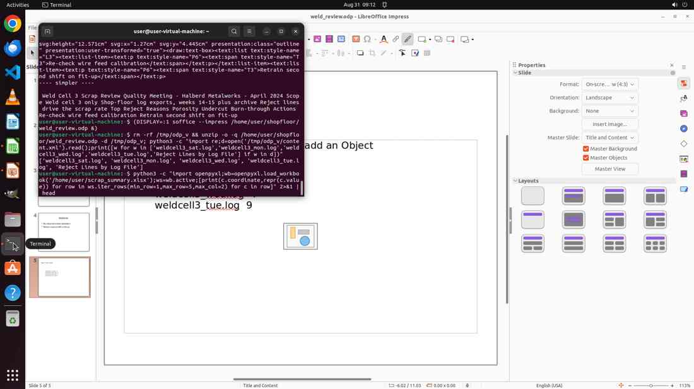
step 50 01:12:41
THINKINGThe command is typed but not executed (still showing the command line, no output). Let me press Enter.